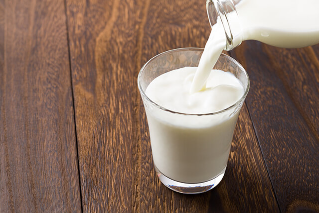

منتجات الألبان
إن احتواء خطة وجبتك على مصادر الألبان طريقة رائعة للحصول على الكالسيوم والبروتين عالي الجودة.
تشير الأبحاث إلى أن استهلاك منتجات الألبان قليلة الدسم في الغالب يساعد في الوقاية من أمراض القلب، والسكتة الدماغية، وارتفاع ضغط الدم، وسرطان القولون والمستقيم، والنوع الثاني من داء السكري، ومتلازمة التمثيل الغذائي. ضع في اعتبارك أن الزبدة، والآيس كريم والقشدة ليست من منتجات الألبان التي توفر هذه الفوائد.
يجب أن تحتوي اختياراتك الصحية للمأكولات المعتمدة على منتجات الألبان على ما يلي:
- الحليب خالي الدسم (المقشود) أو الحليب قليل الدسم (1٪)
- الزبادي (الزبادي العادي أو اليوناني)
- بعض الأجبان قليلة الدسم (جبن الحلوم، وجبن الموزاريلا، وجبن فيتا)
- الحليب الخالي من اللاكتوز أو مشروبات الصويا المدعومة بعناصر غذائية (إذا كنت تعاني من مشاكل اللاكتوز)

نصائح دروبي:
عند شرب شاي الكرك أو المشروبات الساخنة الأخرى، مثل اللاتيه والكابتشينو، اختر خيارات قليلة الدسم. كذلك ، تجنب استخدام الزبادي المحلى بنكهة الفاكهة ، حتى لو كانت تحتوي على كلمة "لايت" أو "قليل الدسم". يمكن أن تكون عالية في السكريات المضافة.